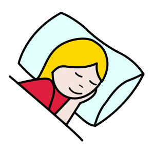
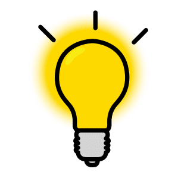

Thématique A · 2de Bac Pro
Fiche de révision A2 — Les rythmes biologiques - le sommeil
Révise en t'amusant, écoute, puis imprime ta fiche
Fais défiler la page : les notions apparaissent une à une. Touche les cartes pour les retourner, touche 🔊 Écouter pour entendre une carte, une question ou une correction, puis réponds aux questions « Je vérifie mes acquis ».
1. Rythme, cycle, fréquence
Touche chaque carte pour lire la définition.
2. Calculer une fréquence
 La respiration au reposUn cycle respiratoire dure 4 secondes. En une minute (60 secondes) : 60 ÷ 4 = 15 cycles par minute.
La respiration au reposUn cycle respiratoire dure 4 secondes. En une minute (60 secondes) : 60 ÷ 4 = 15 cycles par minute.3. L'horloge biologique et les rythmes circadiens
Le rythme circadienRythme dont le cycle dure environ 24 heures, comme l'alternance veille-sommeil. Presque toutes les fonctions du corps en suivent un.
 L'horloge biologiqueDans l'hypothalamus, à la base du cerveau (noyaux suprachiasmatiques). Elle règle l'heure des rythmes sur 24 heures.
L'horloge biologiqueDans l'hypothalamus, à la base du cerveau (noyaux suprachiasmatiques). Elle règle l'heure des rythmes sur 24 heures.Les synchroniseurs recalent l'horloge chaque jour. Le plus puissant : la lumière. Rôle plus modeste : les repas, l'activité physique, la température extérieure. D'après Inserm, Chronobiologie.
4. Une nuit de sommeil
Les cyclesUne nuit : 3 à 6 cycles de 60 à 120 minutes. Une bonne nuit : au moins 3 à 5 cycles de 90 minutes en moyenne.
Les phasesChaque cycle : plusieurs phases de sommeil lent, puis du sommeil paradoxal.
5. Les rôles du sommeil
Touche chaque carte pour voir le rôle.
Le sommeil permet de récupérer sur le plan physique et mental ; il joue un rôle dans la concentration, l'apprentissage, la mémorisation. Un sommeil de mauvaise qualité ou trop court accentue le risque d'irritabilité, de symptômes dépressifs, de prise de poids, de diabète de type 2, d'hypertension ou d'infection. D'après Inserm, Sommeil.
6. La lumière et la mélatonine

La mélatonineL'hormone du sommeil. Elle est produite dans l'obscurité par la glande pinéale, sous la commande de l'horloge biologique. Elle facilite l'endormissement.
La lumièreQuand la rétine perçoit la lumière, la mélatonine est freinée. Les écrans et les LED, riches en lumière bleue, retardent l'endormissement.7. Le travail de nuit et le Code du travail
Le travail de nuitLe recours au travail de nuit est exceptionnel. Sans accord collectif : tout travail entre 21 heures et 6 heures.
Le travailleur de nuitAu moins 3 heures de travail de nuit, au moins 2 fois par semaine, selon son horaire habituel.
 Ses droitsUn suivi individuel régulier de son état de santé. Un poste de jour si son état de santé, constaté par le médecin du travail, l'exige.
Ses droitsUn suivi individuel régulier de son état de santé. Un poste de jour si son état de santé, constaté par le médecin du travail, l'exige.Le repos quotidienTout salarié a droit à 11 heures consécutives de repos au moins.
Le compte professionnel de prévention (C2P) : le travail de nuit (100 nuits par an) et le travail en équipes successives alternantes (30 nuits par an), avec au moins une heure de travail entre 24 h et 5 h sont des facteurs de risques. À partir de ces seuils, l'employeur déclare l'exposition et le salarié acquiert des points : formation, temps partiel, départ à la retraite anticipé. D'après le Code du travail, L. 4161-1 et D. 4163-2.
8. Effets du travail de nuit et prévention
Effets avérés du travail de nuit : troubles du sommeil, somnolence, syndrome métabolique. Somnolence et baisse de vigilance augmentent les accidents, notamment sur la route entre le travail et le domicile. Le travail de nuit limite aussi le temps pour la vie familiale et sociale. D'après INRS, ED 6305 (Anses, 2016).
Je vérifie mes acquis : 0 / 0